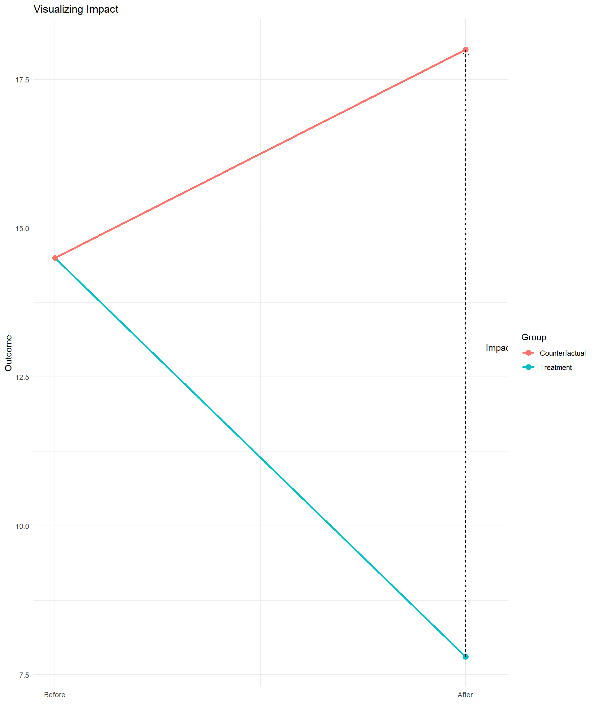

Econometrics with R

We cannot observe the same unit in both treatment and control states simultaneously.
Outcome Variable:
waste_management_costs: Waste management costs incurred yearly per business (AED)Treatment Variables:
treatment_zone: Area selected for program (0/1)enrolled: Business offered the program (0/1)eligible: Business eligible for the program (0/1)Other Variables:
round: Survey round (0=baseline, 1=follow-up)efficiency_index: Score based on industry characteristicsrecycling_center_distance: Distance to nearest recycling centreExperimental Methods:
Quasi-Experimental Methods:
# Let's start by uploading our data.
# It is important to know in which folder your dataset is so you can use the right path.
df <- read.csv("./evaluation_data.csv")
# We multiply the outcome variable by 100
df$waste_management_costs<-df$waste_management_costs*100
# New data, with new variable names
# df <- read.csv("./evaluation_data_GreenWaste.csv")# Compare waste management costs before and after for enrolled industries
# Fit a linear regression model using 'lm_robust' from the 'estimatr' package
# 'lm_robust' gives regression results with robust (heteroskedasticity-consistent) standard errors
# Formula: outcome variable ~ explanatory variable
# Clustered standard errors at the 'zone_identifier' level
# Filter df to only run the regression on industries in treatment zones AND enrolled
m_ba1 <- lm_robust(waste_management_costs ~ round,
clusters = zone_identifier,
data = df %>% dplyr::filter(treatment_zone ==1 & enrolled ==1))Discussion
Problems:
# Compare enrolled vs. non-enrolled households after program implementation
# Use lm_robust as before, with clustered std errors
# This time, we filter df to run the regression on industries in treatment zones AND after the intervention, in the follow-up survey round
m_ba2 <- lm_robust(waste_management_costs ~ enrolled,
clusters = zone_identifier,
data = df %>% filter(treatment_zone==1 & round ==1))Discussion
Problems:
| Before-After | With-Without | |
|---|---|---|
| + p < 0.1, * p < 0.05, ** p < 0.01, *** p < 0.001 | ||
| (Intercept) | 1448.969*** | 2230.491*** |
| (14.596) | (33.742) | |
| round | -664.952*** | |
| (23.002) | ||
| enrolled | -1446.473*** | |
| (33.047) | ||
| Num.Obs. | 5929 | 4960 |
| R2 | 0.211 | 0.327 |
There are certain practical considerations and conditions that need to be met in order to conduct an impact evaluation.
| Condition | Description |
|---|---|
| Intervention | The project, program or policy which is the subject of the impact evaluation. Should be clearly defined, with a known start time and duration as well as clearly defined eligibility criteria. |
| Outcome(s) | One or more clearly defined, observable, and measurable outcomes of interest. |
| Problem Diagnosis | A proposed program or intervention should be developed based on a sound analysis of a particular social or development need and the binding constraints and root causes (i.e., to ensure the solution matches the problem). |
| Theory of Change | A sound, well-constructed theory of change explaining expected causal pathways linking inputs, outputs, and outcomes, including a description and key assumptions associated with each causal step. |
| Sufficient dose and duration | The intervention should be of a sufficient scope, scale, and duration to theoretically produce the intended effect within the time frame of observation. |
| Counterfactual | A clearly defined hypothetical counterfactual, operationalized using a credible identification strategy. |
| Data Quality | Reasonably accurate, complete data, with minimal or no systematic bias. |
| Data Sufficiency | Sufficient data to enable statistical comparison of outcomes between intervention and comparison groups. |
Randomized Assignment: The gold standard for causal inference